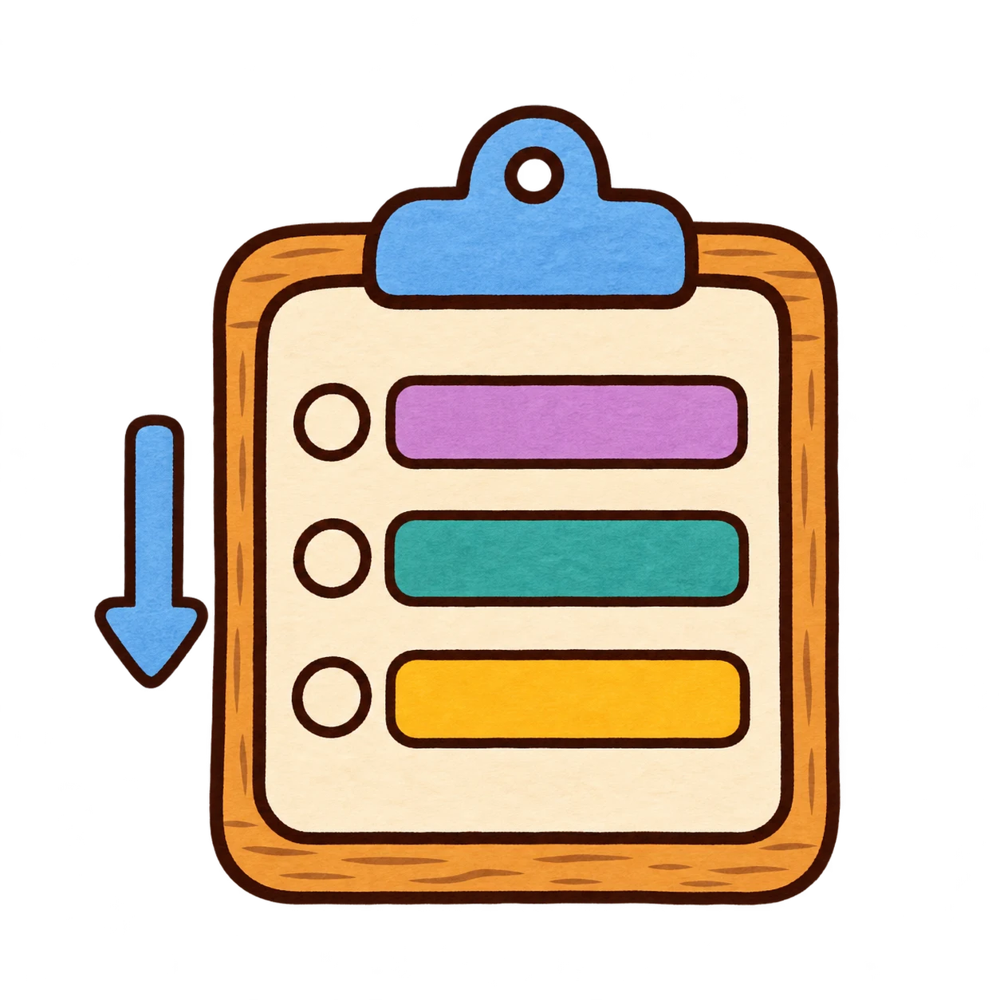

How AutoJudge ranks systems
One question. Two ways to score its answers.
Cited answers
Several systems answer the same question.
Pairwise
Which answer is better?
Evidence
What does it cover? Do its sources support it?

Combined
Blend the two scores and rank the systems.
Pairwise compares both orders
How does a four-day workweek change hours and wellbeing?
Answer B
More time offA then B · A wins
B then A · Tie
A’s credit vs B (1 + 0.5) / 2 = 0.75
Bradley–Terry fits ratings from the judged pairs.
Evidence checks claims and citations
32 hours a week [1]. Less stress and double profits [2].
Checklist coverage
✓ Hours
✓ Wellbeing
Both covered · 1.00
Citation support
[1] 1.0 · Supports the hours
[2] 0.5 · Supports stress only
Mean support · 0.75
The source gives no support for the profit claim.
Combined blends the answer scores
Pairwise score
Weight 50%
Evidence score
Weight 50%
Combined Half of each score for the answer
Rank the systems
Average each system’s scores across questions.
The organizers compare that ranking with the official one.